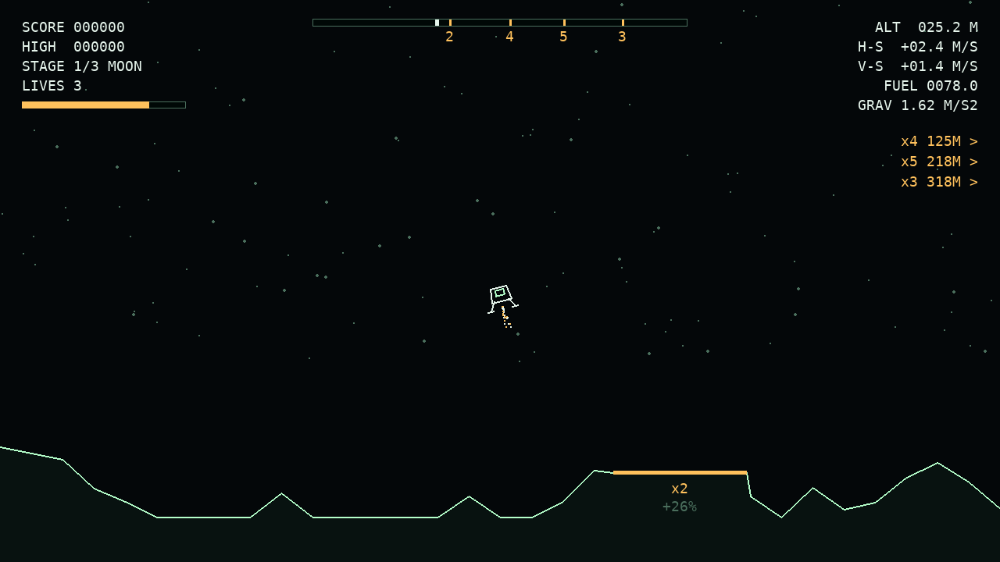
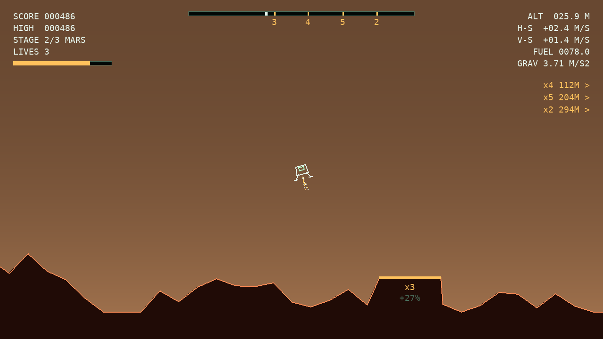
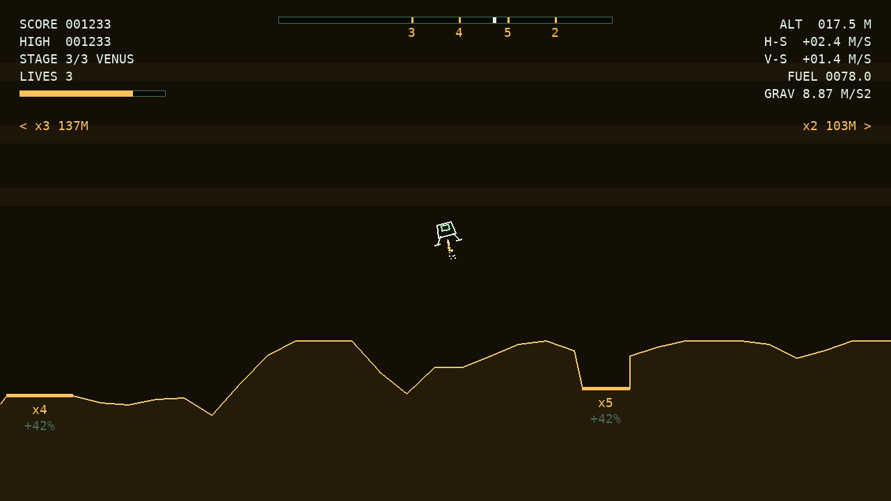

PLAY GUIDE · 2D VECTOR LANDER
MOON DESCENT
제한된 연료로 달 → 화성 → 금성의 착륙 패드에 내려앉아 점수를 모으는 게임
3
스테이지(천체)
3
목숨 · 게임 전체
100
시작 연료
01
조작 방법
CONTROLS비행 조종 — 누르고 있는 동안 작동
←→
기체 회전
초당 90°로 왼쪽 / 오른쪽으로 기울입니다
↑또는Space
주 추력기 분사
기체가 향한 방향으로 11 m/s² 가속 · 연료를 소모합니다
게임 진행
추력은 기체가 기울어진 방향으로
착륙선은 오른쪽으로 흐르며 출발합니다. ←로 기울여 분사하면 수평 속도가 줄고, 착지 직전에는 다시 수직으로 세웁니다.
TIP금성은 중력 8.87 m/s²가 추력 11 m/s²에 가까워, 똑바로 분사해도 감속이 약 2.1 m/s²뿐입니다. 높이 여유를 두고 일찍 분사하세요.
02
인터페이스
HUD · SCREEN
2
3
4
1
5
5
6
7
1
비행 계기 착륙 직전에 확인할 값 · 화면 10 px = 1 m
ALT
발 아래 지면까지 고도 (m)
H-S
수평 속도 · + 오른쪽 / − 왼쪽
V-S
수직 속도 · + 하강 / − 상승
FUEL
남은 연료 (가득 = 100)
GRAV
현재 천체의 표면 중력
2
점수 패널SCORE · HIGH · STAGE · LIVES
누적 점수, 게임을 켠 뒤 최고 점수, 현재 스테이지(1/3 MOON), 남은 목숨
3
연료 바
가득 = 100. 20 미만이면 빨간색. 시간 보너스로 100을 넘으면 바 오른쪽에 추가 칸이 생깁니다
4
패드 레이더
맵 한 바퀴 전체를 압축한 막대. 주황 눈금+숫자 = 패드와 배율, 흰 눈금 = 내 위치
5
화면 밖 패드 안내< x5 77M · x3 103M >
화살표 방향 · 배율 · 거리. 가까운 패드가 위에 표시됩니다
6
착륙 패드
빛나는 주황 평지. 아래에 배율 x2~x5와 거리 보너스 +NN%
7
착륙선
항상 화면 가로 중앙. 지형이 좌우로 흐르고, 맵은 양 끝이 이어진 무한 래핑 구조

1 · MOON 달1.62 m/s²
- 진입 속도 (오른쪽)
- 5.0 m/s
- 분사 중 연료 소모
- 10 / s
- 연료 100으로 분사
- 약 10 s
- 맵 한 바퀴
- 640 m
- 기준 시간
- 45 s

2 · MARS 화성3.71 m/s²
- 진입 속도 (오른쪽)
- 7.0 m/s
- 분사 중 연료 소모
- 9 / s
- 연료 100으로 분사
- 약 11 s
- 맵 한 바퀴
- 600 m
- 기준 시간
- 50 s

3 · VENUS 금성8.87 m/s²
- 진입 속도 (오른쪽)
- 8.0 m/s
- 분사 중 연료 소모
- 7 / s
- 연료 100으로 분사
- 약 14 s
- 맵 한 바퀴
- 560 m
- 기준 시간
- 60 s
03
착륙 성공 조건
TOUCHDOWN CHECK위치 — 발 끝이 모두 패드 안
양쪽 발판의 끝 4점이 모두 주황 패드 양 끝 사이에 있어야 합니다
패드 안ON PAD
수평 속도 H-S
좌우 어느 쪽이든 절댓값 기준
≤ 3.5 m/s|H-S|
하강 속도 V-S
내려가는 중이어야 함 — 상승하며 닿으면 추락 처리
0 ~ 4.5 m/sV-S
자세 — 기울기
수직 기준 좌우 12° 이내로 세운 채 접지
±12°ANGLE
패드 착륙STAGE CLEAR
네 조건을 모두 만족하면 성공. 배율 × 거리 보너스가 적용된 점수를 받습니다.
- 1~2단계는 다음 천체로 계속하거나 여기서 기록 후 종료
- 3단계 금성 착륙 = 임무 완수 (MISSION COMPLETE)
비상 착륙EMERGENCY
패드 밖이라도 발 아래 지형 고저차 0.8 m 이내인 평지에 같은 속도·자세 조건으로 내리면 인정. 기본 점수만 받습니다.
- 스테이지 클리어로 똑같이 다음 단계에 진행
- 연료가 부족해 패드까지 못 갈 때의 차선책
추락MODULE DESTROYED
조건을 하나라도 어기거나 기체가 지형에 부딪히면 목숨 −1, 같은 지형에서 재시도합니다.
- 재시도 연료: 1단계는 100, 2단계부터는 그 단계 시작 연료
- 목숨은 스테이지가 바뀌어도 회복되지 않고, 0이 되면 임무 종료
04
점수 계산
SCORING착륙 점수
반올림
=
기본 점수
100 ~ 200
×
패드 배율
x2 ~ x5
×
거리 보너스
×1.0 ~ ×1.5
기본 점수100~200
100 + 100 × (1 − V-S ÷ 4.5)
부드럽게 내릴수록 높습니다. 비상 착륙은 이 점수만 받습니다.
패드 배율x2~x5
시작점에서 가까운 패드부터 x2 → x5
배율이 높을수록 멀고 좁습니다. 스테이지마다 패드가 0.5 m씩 더 좁아집니다.
거리 보너스최대 +50%
1 + 0.5 × 거리 ÷ 맵 반 바퀴
시작 지점에서 좌우 중 가까운 쪽으로 잰 거리가 멀수록 커집니다. 패드 아래 +NN%로 표시됩니다.
계산 예시실제 게임 화면 · 달 x4 패드
①접지 하강 속도 1.52 m/s → 100 + 100 × (1 − 1.52 ÷ 4.5)166.3
②× 패드 배율 x4 × 거리 보너스 1.417 (화면 +41%)942.7
=반올림 → 착륙 점수+943
누적과 진행총점 = 스테이지별 착륙 점수의 합
스테이지 클리어Enter 다음 천체로 계속 · L 여기서 점수 기록 후 종료
연료 보너스다음 스테이지 연료 = 100 + (기준 시간 − 착륙 시간) × 0.6, 보너스는 최대 30
점수가 아니라 연료로 받는 보상 · 예시: 38 s 착륙 → +4
점수가 아니라 연료로 받는 보상 · 예시: 38 s 착륙 → +4
추락그 판 점수 0, 누적 점수는 유지. 목숨 3개를 모두 잃으면 임무 종료
기록임무 완수 · L 종료 · 목숨 소진 후 영문 이니셜 2~4자 + 전화번호 뒤 4자리를 입력해 리더보드(상위 10개)에 저장 · Esc로 건너뛰기